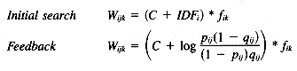

National Institute of Standards and Technology
Abstract
This chapter presents a survey of relevance feedback techniques that have been used in past research, recommends various query modification approaches for use in different retrieval systems, and gives some guidelines for the efficient design of the relevance feedback component of a retrieval system.
Even the best of the information retrieval systems have a limited recall; users may retrieve a few relevant documents in response to their queries, but almost never all the relevant documents. In many cases this is not important to users, but in those cases where high recall is critical, users seldom have many ways to retrieve more relevant documents. As a first choice they can "expand" their search by broadening a narrow Boolean query or by looking further down a ranked list of retrieved documents. Often this is wasted effort: a broad Boolean search pulls in too many unrelated documents and the tail of a ranked list of documents contains documents matching mostly less discriminating query terms. The second choice for these users is to modify the original query. Very often, however, this becomes a random operation in that users have already made their best effort at a statement of the problem in the original query and are uncertain as to what modification(s) may be useful.
Users often input queries containing terms that do not match the terms used to index the majority of the relevant documents (either controlled or full text indexing) and almost always some of the unretrieved relevant documents are indexed by a different set of terms than those in the query or in most of the other relevant documents. This problem has long been recognized as a major difficulty in information retrieval systems (Lancaster 1969). More recently, van Rijsbergen (1986) spoke of the limits of providing increasingly better ranked results based solely on the initial query, and indicated a need to modify that query to further increase performance.
The vast majority of research in the area of relevance feedback and automatic query modification has dealt with a ranking model of retrieval systems, although some of this work has been adapted for the Boolean model. This chapter will deal almost exclusively with feedback and query modification based on the ranking model, and readers are referred to a special issue of Information Processing and Management (Radecki 1988) for discussion of relevance feedback and query modification in Boolean models. Because relevance feedback is strongly related to ranking, readers unfamiliar with basic ranking models should read Chapter 14 before this chapter.
Two components of relevance feedback have evolved in research. First, extensive work has been done in the reweighting of query terms based on the distribution of these terms in the relevant and nonrelevant documents retrieved in response to those queries. This work forms the basis of the probabilistic model for ranking (see Chapter 14 on Ranking Algorithms for a description of this model). Specifically it has been shown that query terms appearing in relevant documents should have increased term weights for later searching (and conversely terms in nonrelevant documents should have decreased term weights). The details of this reweighting appear later in this chapter. Note that this is a very similar idea to traditional feedback in cybernetics or in biologically based systems such as neural networks.
A second component of relevance feedback or query modification is based on changing the actual terms in the query. Whereas query reweighting will increase the ranks of unretrieved documents that contain the reweighted terms, it provides no help for unretrieved relevant documents containing terms that do not match the original query terms. Various methods of query expansion have been tried and these methods are discussed later in the chapter.
This chapter on relevance feedback is organized as follows. Section 11.2 is a discussion of the research in the area of relevance feedback and query modification, starting with early research in the SMART environment, discussing problems in evaluation, and then reviewing research using the two different components of relevance feedback: the reweighting of query terms and the addition of new query terms. The final part of section 11.2 describes research experiments involving other types of relevance feedback. Section 11.3 reviews the use of relevance feedback and query modification in operational retrieval systems, mostly in experimental prototypes. Section 11.4 contains recommendations for the use of relevance feedback in Boolean systems, in systems based on vector space search models, and in systems based on probabilistic indexing or ad hoc combinations of term-weighting schemes. Section 11.5 presents some thoughts on constructing efficient relevance feedback operations, an area that has received little actual experimental work, and section 11.6 summarizes the chapter.
In their forward-looking paper published in 1960, Maron and Kuhns mentioned query modification, suggesting that terms closely related to the original query terms can be added to the query and thus retrieve more relevant documents. Relevance feedback was the subject of much experimentation in the early SMART system (Salton 1971). In 1965 Rocchio published (republished as Rocchio 1971) some experiments in query modification that combined term reweighting and query expansion. Based on what is now known as the vector space model (for more on the vector space model, see Chapter 14 on Ranking Algorithms), he defined the modified query to be
where
Q1 therefore is the vector sum of the original query plus the vectors of the relevant and nonrelevant documents. Using this as the basic relation, he suggested possible additional constraints such as extra weighting for the original query, or limits to the amount of feedback from nonrelevant documents. He ran a variation of the basic formula on a very small test collection, constraining the feedback by only allowing terms to be in Q1 if they either were in Q0 or occurred in at least half the relevant documents and in more relevant than nonrelevant documents. The results of these experiments were very positive.
In 1969 Ide published a thesis based on a series of experiments extending Rocchio's work, again using the SMART system (Ide 1971). She not only verified the positive results of Rocchio, but developed three particular strategies that seemed to be the most successful. The first was the basic Rocchio formula, minus the normalization for the number of relevant and nonrelevant documents. The second strategy was similar, but allowed only feedback from relevant documents, and the third strategy (Ide dec hi) allowed limited negative feedback from only the highest-ranked nonrelevant document. She found no major significant difference between performance of the three strategies on average, but found that the relevant only strategies worked best for some queries, and other queries did better using negative feedback in addition.
Although the early SMART work was done with small collections, it provided clear evidence of the potential power of this technique. Additionally it defined some of the major problems in the area of evaluation (Hall and Weiderman 1967; Ide 1969). These are discussed in the next section because the evaluation problem has continued to plague feedback research, with the use of inappropriate evaluation procedures often indicating performance gains using feedback that are unrealistic.
Standard evaluation in information retrieval (Salton and McGill 1983) compares recall-precision figures generated from averaging the performance in individual queries and comparing this averaged performance across different retrieval techniques. If this evaluation method is used in a simplistic manner in comparing the results after one iteration of feedback against those using no feedback, the results generally show spectacular improvement. Unfortunately, a significant part of this improvement results from the relevant documents used to reweight the query terms moving to higher ranks (e.g., documents initially ranked at 1, 4, and 8 moving to ranks 1, 2, and 4). Not only is this an unrealistic evaluation because presumably the user has already seen these documents, but it also masks any real improvement in relevant document ranks below those initially shown the user.
There were several more realistic methods of evaluation tried (Salton 1970) but a de facto standard (the residual collection method) has since been used for most research. In this method the initial run is made and the user is shown the top x documents. These documents are then used for relevance feedback purposes. The evaluation of the results compares only the residual collections, that is, the initial run is remade minus the documents previously shown the user and this is compared with the feedback run minus the same documents. This method provides an unbiased and more realistic evaluation of feedback. However, because highly ranked relevant documents have been removed from the residual collection, the recall-precision figures are generally lower than those for standard evaluation methods and cannot be directly compared with performance as measured by the standard evaluation method.
The probabilistic model proposed by Robertson and Sparck Jones (1976) is based on the distribution of query terms in relevant and nonrelevant documents (for more on the probabilistic model, see Chapter 14). They developed a formula for query term-weighting that relies entirely on this distribution.
where
Note that this weighting method assumes that all relevant documents are known before a query is submitted, a situation not in itself realistic, but suggestive of a method of relevance feedback after some knowledge is gained about relevance (especially for use in SDI services). Robertson and Sparck Jones used this formula to get significantly better retrieval performance for the manually indexed Cranfield 1400 collection, employing an acceptable alternative method of evaluation (the test and control method).
Sparck Jones (1979a) extended this experiment to a larger collection and again showed significant improvements. She also performed an experiment (1979b) to simulate the use of this relevance weighting formula in an operational relevance feedback situation in which a user sees only a few relevant documents in the initial set of retrieved documents, and those few documents are the only ones available to the weighting scheme. These experiments required adding a constant to the above formula to handle situations in which query terms appeared in none of the retrieved relevant documents. The results from this reweighting with only a few relevant documents still showed significant performance improvements over weighting using only the IDF measure (Sparck Jones 1972; see Chapter 14 on Ranking Algorithms for a definition of IDF), indicating that the probabilistic weighting schemes provide a useful method for relevance feedback, especially in the area of term reweighting.
Croft (1983) extended this weighting scheme both by suggesting effective initial search methods (Croft and Harper 1979) using probabilistic indexing and by adapting the weighting using the probabilistic model to handle within-document frequency weights.

where
where
Two constants, C and K, allow this scheme to be adjusted to handle different types of data. Croft and Harper (1979) found that for the manually indexed Cranfield collection, C needed to dominate the initial search because the mere assignment of an index term to a document implied the importance of that term to that document. For automatically indexed collections, the importance of a term is better measured by the IDF alone, with C set to 0 for the initial search. Croft (1983) found that the best value for K was 0.3 for the automatically indexed Cranfield collection, and 0.5 for the NPL collection, confirming that within-document term frequency plays a much smaller role in the NPL collection with its short documents having few repeating terms. When K is used in the subsequent feedback runs, the optimum value increases to 0.5 for Cranfield and 0.7 for NPL. This could reflect the improved weighting for term importance within an entire collection using the relevance weighting instead of the IDF, requiring a lesser role for within-document frequency weighting.
The results of this new weighting scheme with optimal C and K settings showed improvements in the automatically indexed Cranfield collection of up to 35 percent over weighting using only the term distribution in the initial set of relevant and nonrelevant documents, although this improvement was somewhat less using the NPL collection where documents are shorter.
It is interesting to note the parallel between the best methods of initial searching and the results of adding within-document frequency weighting to the probabilistic weighting. In the initial searching it was shown (see Chapter 14) that it is important in most situations to weight the terms both by a measure of their importance in a collection (such as using the IDF measure) and by a measure of their importance within a given document. Harman (1986) suggested that these two measures are complementary and that combining them provided improvements roughly analogous to adding the improvements found by using each measure separately. Probabilistic weighting affects only the importance of a term within a collection for a given query; the importance of that term within a given document can only be measured by some function of its frequency within that document, and therefore it should be expected that including both weighting components produces the best results.
Other models of probabilistic indexing have been proposed (or re-evaluated) recently; in particular see Fuhr (1989) and Wong and Yao (1990).
If a query has retrieved no relevant documents or if the terms in the query do not match the terms in the relevant documents not yet retrieved, it becomes critical to expand the query. The early SMART experiments both expanded the query and reweighted the query terms by adding the vectors of the relevant and nonrelevant documents. However, it is possible to expand a query without reweighting terms.
Ideally, query expansion should be done using a thesaurus that adds synonyms, broader terms, and other appropriate words. The manually constructed thesaurus needed for this is seldom available, however, and many attempts have been made to automatically create one. Most of these involve term-term associations or clustering techniques. As these techniques are discussed in Chapter 16 on clustering, only the results will be briefly described here.
Lesk (1969) tried several variations of term-term clustering using the SMART system and had little success. The fact that term co-occurrence is used to generate these thesauri implies that most terms entering the thesaurus occur in the same documents as the seed or initial term (especially in small collections), and this causes the same set of documents to be retrieved using these related terms, only with a higher rank. Not only does this cause little overall improvement, but that improvement is only in the precision of the search rather than in increasing recall.
Sparck Jones and Barber (1971) also tried term-term clustering. Again they did not get much improvement and found that it was critical to limit the query expansion to only those terms strongly connected to initial query terms, with no expansion of high-frequency terms, to avoid any degradation in performance. These results were confirmed by Minker, Wilson, and Zimmerman (1972) who found no significant improvement in relevant document retrieval, with degradations in performance often occurring.
Harman (1988) used a variation of term-term association (the nearest neighbor technique) and found similar results, with no improvement and with less degradation when adding only the top connected terms and no high-frequency terms. She suggested that users could "filter" the new query terms, that is, show users a list of suggested additional query terms and ask them to select appropriate ones. In a simulation assuming a perfect user selection, however, the improvements were only 8.7 percent using the automatically indexed Cranfield collection. By comparison, applying a similar user filtering process with a selection of terms from relevant documents provided an improvement of over 16 percent, almost twice that for term-term clustering techniques.
Because the area of automatic thesaurus building is so intuitively appealing, work still continues. Crouch (1988) presented preliminary results of another term-term correlation study, and Guntzer et al. (1989) is currently working on a semi-automatic method to construct a thesaurus based on actual term usage in queries. Two additional promising methods involve the use of highly structured networks. Belew (1989) described a rich connectionist representation which was modified based on retrieval experience, and Dumais (1990) used an elaborate factor analysis method called latent semantic indexing to expand queries.
It is also possible to provide query expansion using terms from the relevant documents without term reweighting. As mentioned earlier, Harman (1988) produced lists of terms from relevant documents using several methods of ranking those terms. These terms were then automatically added to the query. She found significant differences between the ranking methods, with techniques involving a combination of the normalized noise measure (similar to the IDF; see Chapter 14 on Ranking Algorithms) with the total frequency of the term within the set of relevant documents outperforming simple sorts based only on the number of relevant documents containing the term. She also found that adding too many terms from a sorted list decreased performance, with the best performance for the Cranfield collection occurring after adding about 20 terms, and slightly worse performance both for higher than 20 terms and for only 10 terms. As a third part of the experiment, it was shown that using a simulated perfect user selection from the top 20 terms produced a 31 percent improvement over methods with no user selection. Several on-line retrieval systems have also used this approach of showing users sorted term lists (see section 11.3).
The vast amount of relevance feedback and query expansion research has been done using both query expansion and term-reweighting. The early SMART experiments (see section 11.2.1) added term vectors to effectively reweight the query terms and to expand the query. Researchers using probabilistic indexing techniques for reweighting also tried some specific experiments in query expansion.
Harper and van Rijsbergen (1978) used the probabilistic model to reweight query terms, using all relevant document information for weighting, and expanding the query by adding all terms directly connected to a query term by a maximum spanning tree (MST) technique of term-term clustering. Additionally, they developed a new relevance weighting scheme, the EMIM weighting measure (see Harper 1980 for implementation details of EMIM). This weighting scheme better handles the parameter estimation problem seen in the Robertson-Sparck Jones measure (1976) when a query term appears in no retrieved relevant documents, although it is not as theoretically optimal as the Robertson-Sparck Jones measure. The EMIM weighting scheme with query expansion by MST showed significant improvements (using all relevant documents) over the formula used by Robertson and Sparck Jones. Using only 10 or 20 documents for feedback, the EMIM reweighting with expansion still showed significant improvements over the old formula. It should be noted, however, that two effects are compounded in this experiment: reweighting using an improved weighting scheme (EMIM) and query expansion using a MST technique.
Harper's thesis (1980) elaborated on the area of query expansion and reweighting. Using the EMIM relevance weighting scheme, he tried the same MST expansion on the manually indexed Cranfield 1400 collection, a Cranfield 1400 collection with only titles for documents, and the larger UKCIS2 collection. The improvements for query expansion were much less with the Cranfield titles and the UKCIS2 collection than for the manually indexed Cranfield collection, largely because the MST had much shorter documents to use for expansion. In addition to the expansion using the MST, Harper tried expanding queries using a selection of terms from retrieved relevant documents. He selected these terms by ranking a union of all terms in the retrieved relevant documents using the EMIM measure, and then selecting a given number from the top of this list. He found significant performance improvements for the manually indexed Cranfield collection over that using the MST expansion, but no improvement for the UKCIS2 collection.
Performance improvements for query expansion seem to be heavily dependent on the test collection being used. The Cranfield collection, either as manually indexed, or with automatically indexed abstracts, consistently shows performance improvements for query expansion, either using the MST method or expanding by terms from relevant documents. Collections with short documents such as the Cranfield title collection or the UKCIS collection probably do not provide enough terms to make expansion effective. A further example of this effect is shown in Smeaton and van Rijsbergen (1983), where a very extensive number of different query expansion methods showed no improvements when run using the NPL test collection, a collection having documents indexed by only 20 terms apiece on the average.
Wu and Salton (1981) experimented with term relevance weighting (also known as term precision weighting), a method for reweighting using relevance feedback that is very similar to the Robertson-Sparck Jones formula. They tried reweighting and expanding the query by all the terms from relevant documents. They found a 27 percent improvement in average precision for the small (424 document) Cranfield collection using reweighting alone, with an increase up to 32.7 percent when query expansion was added to reweighting. There was more improvement with the Medlars 450 collection, with 35.6 percent improvement for reweighting alone and 61.4 percent for both reweighting and expansion.
A recent paper by Salton and Buckley (1990) compared twelve different feedback procedures, involving two different levels of query expansion, across six different test collections. The standard three-vector feedback methods were used, in addition to other probabilistic feedback methods. Concentrating only on the vector feedback methods, the three they used were as follows.
where
The basic operational procedure in these three methods is the merging of document vectors and original query vectors. This automatically reweights query terms by adding the weights from the actual occurrence of those query terms in the relevant documents, and subtracting the weights of those terms occurring in the nonrelevant documents. Queries are automatically expanded by adding all the terms not in the original query that are in the relevant documents and nonrelevant documents, using both positive and negative weights based on whether the terms are coming from relevant or nonrelevant documents (no new terms are actually added with negative weights; the contribution of nonrelevant document terms is to modify the weighting of new terms coming from relevant documents). The Ide dec-hi method only uses the top nonrelevant document for feedback, instead of all nonrelevant documents retrieved within the first set shown the user. The Rocchio method both allows adjustment for the relative input of relevant and nonrelevant documents and uses a weighting scheme based on a normalized version of the document weights rather than the actual document weights themselves.
The results favored the Ide dec-hi method for all six collections, although the other methods follow closely behind. Setting
Two types of document weighting were used in these experiments: a binary weighting and weighting done using the best SMART weighting schemes involving a combination of within-document frequencies of terms and the IDF measure for these terms. It was concluded that using appropriate term weighting for the documents (as opposed to binary weighting schemes) is important for most collections. This agrees with Croft's results (1983) using within-document frequencies in addition to reweighting by term distribution in relevant and nonrelevant documents. They also found differences in performance across test collections and suggested that the types of data to be used in retrieval should be examined in selecting feedback and query expansion mechanisms (see Section 4 on Recommendations for Use of Relevance Feedback).
Noreault (1979) tried an entirely different approach to relevance feedback. After users had selected a relevant document(s), he used this (these) document(s) as a "new query," effectively ranking (using the cosine correlation as implemented in the SIRE system) all the documents in the collection against this document(s). The top 30 of these retrieved documents were then added to those initially selected by the original query. He found on average that this added 5.1 new relevant documents per query. This feedback method would work with any type of retrieval system such as Boolean systems, provided some method existed for selecting related documents, as the query itself is not modified during the retrieval process.
Attar and Fraenkel (1981) used an approach based on local feedback only. They produced an ordered list of the terms in all the documents retrieved in a first iteration search, with the list ordered by the frequency of a term in that set and by its "distance" from the initial query. These terms were shown to a user for selection as new query terms or sifted by an automatic procedure for addition to the query. They found that both expert and nonexpert users could correctly select terms from the suggested list, but that their automatic sifting mechanism could not do this well. Note that terms are selected from all retrieved documents, not just relevant ones, so that this technique could be used as a feedback technique for queries retrieving no relevant documents on the first iteration.
Dillon et al. (1983) used a hybrid approach to provide relevance feedback to a Boolean environment. They devised a new query based only on terms from previously retrieved documents, with terms weighted by a formula similar to the term precision formula used by Salton (but with significant differences). The weighted terms were not used, however, to produce a ranked list of retrieved documents, but were used to automatically construct a revised Boolean query. Results suggest that this method can be effective if very careful attention is paid to the construction of the revised Boolean query.
One of the earliest (and few) applications of relevance feedback in an operational system was by Vernimb (1977) in the European Nuclear Documentation System (ENDS). This system has an automatic procedure based on a user/system dialogue, removing the need for a user to deal with a Boolean retrieval system. The starting position for this approach is at least two relevant documents, either obtained by a manual search, or by any type of search using a Boolean or ranking retrieval system. The ENDS system then automatically constructs a Boolean query using an elaborate procedure based on the co-occurrence of terms in these known relevant documents, and the user is shown a new set of documents for another iteration of relevance judgments and automatic query adjustments. This procedure is further modified by a term-weighting scheme based on the SMART model that allows the list of documents shown the user to be ranked based on occurrences of terms in the set of relevant documents versus the set of nonrelevant documents. The users of this system found it very satisfactory, and some limited experimental results showed that its performance was considerably better than traditional procedures (such as traditional Boolean retrieval).
Another type of man-machine dialogue using relevance feedback was developed by Oddy (1977) in his THOMAS system. Although this system was purely experimental, it was designed to be a prototype system for the end-user and therefore resembles an on-line retrieval system more than a system designed for retrieval experiments. In this system the user inputs a natural language phrase or sentence and the system returns a single reference based on a search in the concept network (a network built by the MEDUSA system at the University of Newcastle for access to MEDLARS records). This reference contains both a list of authors of the reference and a list of index terms associated with that reference. The user is asked to not only judge the relevance of that reference, but to select index terms that are relevant (or optionally insert new index terms). The query is appropriately modified by the system and a new reference is sought. This type of query modification allows users to browse the references and, although it is not as automatic as the ENDS system, it gives a user more explicit control over the browsing process.
The CUPID system (Porter 1982) implemented the probabilistic retrieval model at the University of Cambridge. This system takes a natural language query, returns a ranked list of titles, and asks the user for relevance judgments. These judgments are used for two distinct purposes: (1) to reweight the original query terms using the Robertson-Sparck Jones reweighting formula, and (2) to select a ranked set of terms from the relevant documents to submit to the user for possible addition to the query. This process can be iterated repeatedly until the user has sufficient information. An improved version of CUPID, the MUSCAT system, is currently running at the Scott Polar Research Institute, Cambridge (Porter and Galpin 1988).
Doszkocs's CITE system (1982) was designed as an interface to MEDLINE and was used as an on-line catalog system (Doszkocs 1983). It combined a ranking retrieval method (see Chapter 14 for more on the CITE system) with an effective search strategy for the huge document files and the controlled and full text vocabulary used in MEDLINE. CITE returned a list of ranked references based on a user's natural language query, and asked for relevance judgments from the user. The system used these judgments to display a ranked list of medical subject headings (ranked by a frequency analysis of their use in the retrieved documents). The user then selected terms for adding to the query and the search was repeated.
Cirt, a front end to a standard Boolean retrieval system, uses term-weighting, ranking, and relevance feedback (Robertson et al. 1986). The system accepts lists of terms without Boolean syntax and converts these terms into alternative Boolean searches for searching on the Boolean system. The user is then shown sets of documents, defined by Boolean combinations of terms, in rank order as specified by a special weighting and ranking algorithm (Bovey and Robertson 1984). If relevance judgments are made, feedback takes the form of appropriately reweighting terms to produce different ranked orders of documents.
Relevance feedback plays a crucial role in the Connection Machine retrieval system (Stanfill and Kahle 1986). Here a query is automatically expanded by adding all the terms in the relevant documents, causing very large queries that can take advantage of the speed offered by the massively parallel architecture. This system relies heavily on co-occurrence of terms and therefore needs large numbers of query terms to work effectively.
Two approaches for query expansion produce lists of related terms in ranked order for user selection and addition to the query. The first approach, the Associative Interactive Dictionary on the TOXLINE system (Doszkocs 1978), does a statistical analysis of the terms appearing in relevant documents in comparison to their appearance in all documents, and displays a list of terms ranked on these statistics. The second, the ZOOM facility of ESA-IRS Online search (Ingwersen 1984), generalizes the first approach to deal with a complete set of retrieved documents. It analyzes the frequency of single words, phrases, or codes appearing in the set of documents, and displays these in order of highest frequency of occurrence for user selection.
It should be stated again that relevance feedback and/or query modification are not necessary for many queries, are of marginal use to many users, and may possibly be of marginal use in some operational systems. Often users are only interested in an "answer" to their question (such as a paragraph in an on-line manual), or in a single good bibliographic reference for introduction to a new area of interest. Some users may never be interested in a high-recall search; others may not be willing to spend any extra effort in retrieving more relevant documents or may be unaware of the low recall of their initial search. An experiment by Fox (1987) showed little use of relevance feedback in a student experiment, probably because it was "not explained adequately" and because the nine test queries did not need further modification.
Some situations call for high recall, however. In a test of a large operational full-text retrieval system (Blair and Maron 1985), only about 20 percent of the relevant documents were retrieved, even though the users thought they had retrieved most of the relevant documents (and felt they needed all the relevant documents).
If a decision is made to offer relevance feedback or some type of query expansion technique, then the appropriate method depends on two issues: the type of retrieval system being used for initial searching, and the type of data that is being used. Three basic retrieval systems are being addressed here: Boolean-based systems, systems based on ranking using a vector space model, and systems based on ranking using either an ad hoc combination of term-weighting schemes or using the probabilistic indexing methods. In terms of data characteristics, two characteristics have been found to be important experimentally: the length of the documents (short or not short), and the type of indexing (controlled or full text). Possibly other factors exist, but there is a lack of direct experimentation about these issues.
If a Boolean retrieval system is being used, two options seem feasible. The most difficult option would be to modify the system to specially handle relevance feedback either by designing frontends to automatically construct modified Boolean queries (such as was done by Dillon, Vernimb, and the Cirt system), or to graft a ranking system onto the Boolean system to handle all but the initial query (such as done by Noreault). Front-end construction or specially modified Boolean systems (see again the special issue of Information Processing and Management, [Radecki 1988]) require major modifications to the entire system and can be difficult to tune. However, they offer the greatest improvement in performance.
The second option would be to produce ranked lists of terms for user selection (such as the ZOOM feature on ERA-IRS [Ingwersen 1984]). This option leaves the Boolean mechanism intact, but improves the query by suggesting alternative terms and by showing the user the term distribution in the retrieved set of documents. The ranking of the list could be done by term frequency within the entire retrieved set (the simplest method) or by more complex methods taking account of term distribution within only the relevant documents (such as Doszkocs's AID system [Doszkocs 1978]). The first method would be useful in helping a user construct a better query by pointing out the term distribution in the entire retrieved document set (relevant and nonrelevant), and the second method would help a user zero in on new terms by narrowing the term list to only those terms in the relevant documents. Note that the effects of the type of data being used for retrieval are minimal for this type of feedback as user selection is providing the term filter rather than automatic term distribution statistics.
If the retrieval system is based on the vector space model using a cosine correlation as a ranking measure, then the feedback methods developed in the SMART project are appropriate. As discussed earlier, the vector space model automatically combines the two components of feedback, term reweighting and query expansion, making implementation of relevance feedback more straightforward using this method but somewhat less flexible. Experiments showed that the Ide dec-hi method is the best general purpose feedback technique for the vector space model. It uses minimal negative feedback and can be implemented without concern for deciding parameter settings.
where
The use of normalized vector space document weighting is highly recommended for most data rather than binary weighting schemes (see section 14.5 of Chapter 14 for details on these weighting schemes). The only decision to be made using this type of relevance feedback is how much query expansion to allow. Since results suggest that query expansion using all terms from the retrieved relevant documents may be only slightly better than a selection of those terms (Salton and Buckley 1990), it is recommended that only a limited number of terms be added (mainly to improve response time), and that those be chosen based on the criteria presented in that paper. This means that whereas all query terms will be reweighted during query modification, the terms to be added to the query are automatically pulled from a sorted list of new terms taken from relevant documents. These terms are sorted by their total frequency within all retrieved relevant documents, and the number of terms added is the average number of terms in the retrieved relevant documents. A possible alternative to this selection method would be to substitute user selection from the top of the list rather than adding a fixed number of terms.
If the retrieval system is based on either the probabilistic indexing model or an ad hoc combination of term-weighting schemes, then the term-weighting and query expansion can be viewed as two separate components of feedback, with no specific relationship.
The term-weighting schemes should be carefully examined to determine the correct method for implementing reweighting based on relevance feedback. As noted earlier, the reweighting schemes only affect the weighting based on the importance of a term within an entire collection (global importance). Term-weighting based on term importance within a given document (local importance, such as those based on normalized within-document frequencies) should not be changed; nor should term-weightings based on document structure or other such considerations. The approach taken by Croft (1983) and described earlier in section 11.2.3 is the recommended model to follow in reweighting methodology, in which he simply replaced the portion of the term-weighting based on global term importance (the IDF in this case) with a revised version of the Robertson-Jones weighting formula.
where
where
Two adjustable constants, C and K, provide methods for adjusting the weighting scheme for different types of data. Based on the experiments previously reported, a reasonable estimate for C would be 0 for automatically indexed collections or for feedback searching. This allows the IDF or the relevance weighting to be the dominant factor. Only for manually indexed collections should C be set higher to allow the mere existence of a term within a document to carry more weight. The setting of the constant K should be around 0.3 for the initial search of regular length documents (i.e., documents having many multiple occurrences of a term), rising to around 0.5 for feedback searches. This allows the within-document frequency to play a large role in the initial search, and a somewhat diminished role in subsequent searches, where it is assumed that the relevance weighting becomes more and more important. For short documents, the within-document frequency plays a minimal role and should be either removed from the scheme (such as suggested by Salton and Buckley [1990]) or downweighted by setting K from 0.5 to 0.7.
If other weighting schemes based on criteria such as document structure have been used, then it is likely that the overall importance of these schemes in the total weighting needs to be modified in a manner similar to the downweighting of document frequency weights using the constant K. This will depend on the relative importance of these additional weighting schemes with respect to the importance of matching a given keyword, and will require some experimentation in order to properly introduce relevance feedback to these schemes.
The weighting scheme above only affects the ranks of documents containing terms originally in the query. To be truly effective, some type of query expansion needs to be done. Two alternative sources exist for new query terms. First, the query could be expanded by maximal spanning tree or nearest neighbor techniques (or other automatic thesaurus methods), offering users a selection of terms that are the terms most closely related to the individual query terms. These terms should be in a single list, grouped by expanded terms for each query term, with users selecting appropriate terms for addition to the query.
Although this expansion method works even in situations with no relevant documents retrieved, it has been shown that query expansion by related terms is not as effective as expansion by terms from relevant documents. The second alternative method is therefore to present users with a sorted list of terms from the relevant documents, with the list sorted on the total frequency of the given term within the entire set of retrieved relevant documents (possibly modified by the IDF or normalized noise measure of the term), with users selecting appropriate terms for addition to the query.
Whereas user selection is strongly recommended, it would be possible to use either of these query expansion techniques automatically, adding either the top 20 or so terms from a sorted list of terms from the relevant documents, or adding the closest related term using the automatic thesaurus method for each input query term (see Harman 1992).
A somewhat different approach to user term selection is to get more initial input from the user, such as possible related terms, relative importance of query terms, and important grouping of those terms (phrases). Croft and Das (1990) showed that using this technique in combination with relevance feedback with user selected terms improved results even more than feedback alone, with only a 35 percent overlap in terms found in relevant documents with those suggested by the users initially.
Care should be taken when using either of the two query expansion methods on collections of short documents such as ones with less than 25 index terms. User selection becomes even more critical in this situation, as it has been shown in the past that these expansion methods are unreliable for short documents, such as titles or very short abstracts.
Because of the lack of use of relevance feedback in operational systems in general, little work has been done in achieving efficient implementations for large data sets of the recommended feedback algorithms discussed in section 11.4. This section therefore contains only guidelines for efficient implementations, rather than descriptions of actual implementations that have been fully tested. The first part of the section lists the data and data structure needs for relevance feedback, with discussions of alternative methods of meeting these needs, and the second part of the section contains a proposal expanding the basic ranking system described in section 14.6 of Chapter 14 to include relevance feedback and other query modification.
The major data needed by relevance feedback and other query modification techniques is a list of the terms contained in each retrieved document. These terms become input to structures designed for reweighting of query terms and for collecting lists of terms for query expansion. Unfortunately, most of the retrieval systems described in this chapter and Chapter 14 involve the use of inverted files for fast response time. This means that the index lists the documents containing each term, but not the terms contained in each document. For large data sets, this inverted file is the only supplemental file stored because of space issues. The input text is kept for display purposes only, with no lists being kept of all the significant words in each document.
For small collections, lists of the terms within each document can be kept (see Porter [1988] for a description of the necessary structures used in the MUSCAT system). For larger data sets, an alternative method would be to parse the retrieved documents in the background while users are looking at the document titles. Although this may be time consuming, the prototype experience of Harman and Candela (1990) using a background secondary string search on retrieved records indicates that this additional work can be accomplished with minimal effect on response time. Even a slight response time delay for feedback may be preferable to the high overhead of storage needed for the lists of terms in a per document order.
Assuming that these term lists are available, either through past storage or through on-line parsing, a structure needs to be built to merge a list of all terms in relevant documents, keeping track of the total number of postings (documents containing one or more occurrences of the term), and the total frequency of terms within all relevant documents. If negative feedback is used such as in Rocchio's algorithm, then an additional list needs to be kept for nonrelevant documents. These lists could be implemented as sets of sorted lists using some type of binary search and insert algorithm, or using an efficient binary tree method such as the right-threaded tree used in the indexing method described in Chapter 3 on Inverted Files. This structure is the major data structure needed for query term reweighting and for production of lists of sorted terms for query expansion. Suggestions for the use of this structure are given in section 11.5.2.
If some type of automatic thesaurus method is to be used in query expansion, then additional storage may be needed. This storage could be minimized by attaching the closest related term to each term in the dictionary portion of the inverted file (or the closest two or three terms). Alternatively, there could be extensive structures needed for more sophisticated methods using complex interrelationships.
This proposal is based on the implementation of the ranking system as described in section 14.6 of Chapter 14. It should be made clear that the modifications for feedback suggested in this section have not been implemented and therefore should be used only as an illustration of implementations rather than as thoroughly tested techniques. Nevertheless, the issues discussed in this section apply to any efficient implementation of relevance feedback.
The inverted file as shown in Figure 11.1 is the same as that shown in Figure 14.3 in Chapter 14, with two modifications: the terms are complete words rather than stems, and there are two additional fields holding closely related terms. These modifications allow query expansion using some type of automatic thesaurus such as a nearest neighbor algorithm.
The use of the full terms (as compared to stems only) is necessary because of the addition of the related terms. Stems could be used if some extension to the basic retrieval system to permit the use of both stems and full terms were in effect. See section 14.7.1 of Chapter 14 for an example of such a system and form a natural extension of Figure 14.5 of that chapter to include related terms. The inverted file would be constructed exactly as described in section 14.6 of that chapter, with the two related terms being added using some type of term-term relating algorithm (see Chapter 16 on clustering for details of these algorithms).
The searching itself would proceed as described in the basic retrieval system. After a ranked list of documents are retrieved, users would have an option of doing relevance feedback rather than submitting a new query. If the user selects to start relevance feedback, he or she would be asked to mark retrieved documents that are relevant and to indicate to the system the last document scanned during retrieval. The system would start building the merged list of terms previously described in the background as soon as the marking starts. After the user indicates that all relevant documents have been marked, the system recomputes the weights of the original query terms based on the reweighting schemes recommended in section 11.4. Additionally, the query is expanded by this merged term list, either by automatically adding the terms with the highest "rank" in the list (again see section 11.4 for recommended methods of sorting the list) or preferably by showing the user the sorted list and adding only those terms selected by the user. If no relevant documents are indicated, no reweighting is done, and the term list shown to the user is the list of related terms based on those previously stored in the inverted file. The expanded and reweighted query is run as if it were an initial query, but all documents marked as scanned by the user do not appear in the revised retrieved list.
Two further modifications are necessary to the basic searching routine to allow feedback. First, the weights stored in the postings must be only the normalized document frequency weights (option 2 in section 14.6.1 of Chapter 14) rather than the combined weighting using the normalized document frequency weights and the IDF. This permits the IDF to be pulled from the inverted file on the initial search and combined with the normalized document frequency weight, but allows the new relevance weights to be combined with the normalized document frequency weights on subsequent searches.
The second modification is not strictly necessary but probably would ensure adequate response time. The basic retrieval algorithm is time-dependent on the number of query terms. As the number of query terms grows large, the number of retrieved documents also grows large and the final sort for the list of documents becomes very time-consuming. The pruning modifications described in section 14.7.5 of Chapter 14 become critical to good performance for long queries. Some of the more elaborate pruning methods described in that section may be even more appropriate as they eliminate even the need to retrieve some documents.
This chapter has presented a survey of relevance feedback techniques both for reweighting query terms and for adding new query terms. Recommendations and guidelines for building relevance feedback components have been given. More experimentation in the use of relevance feedback in operational systems is needed to verify the guidelines in this proposal. Relevance feedback has clearly proven itself in the laboratory and now needs only efficient implementations to hasten its use in operational systems.
ATTAR, R., and A. S. FRAENKEL. 1981. "Experiments in Local Metrical Feedback in Full-Text Retrieval Systems." Information Processing and Management, 17(3), 115-26.
BLAIR, D. C., and M. E. MARON. 1985. "An Evaluation of the Retrieval Effectiveness of a Full-Text Document-Retrieval System." Communications of the ACM, 28(3), 289-311.
BELEW, R. K. 1989. "Adaptive Information Retrieval: Using a Connectionist Representation to Retrieve and Learn About Documents." Paper presented at ACM Conference on Research and Development in Information Retrieval, Boston, Mass.
BOVEY, J. D., and S. E. ROBERTSON. 1984. "An Algorithm for Weighted Searching on a Boolean System." Information Technology: Research and Development, 3(1), 84-87.
CROFT, W. B. 1983. "Experiments with Representation in a Document Retrieval System." Information Technology: Research and Development, 2(1), 1-21.
CROFT, W. B., and R. DAS. 1990. "Experiments in Query Acquistion and Use in Document Retrieval Systems." Paper presented at 13th International Conference on Research and Development in Information Retrieval, Brussels, Belgium.
CROFT, W. B., and D. J. HARPER. 1979. Using Probabilistic Models of Document Retrieval Without Relevance Information. Journal of Documentation, 35(4), 285-95.
CROUCH, C. J. 1988. "A Cluster-Based Approach to Thesaurus Construction." Paper presented at ACM Conference on Research and Development in Information Retrieval, Grenoble, France.
DILLON, M., J. ULMSCHNEIDER, and J. DESPER. 1983. "A Prevalence Formula for Automatic Relevance Feedback in Boolean Systems." Information Processing and Management, 19(1), 27-36.
DOSZKOCS, T. E. 1978. "AID, an Associative Interactive Dictionary for Online Searching." Online Review 2(2), 163-74.
DOSZKOCS, T. E. 1982. "From Research to Application: The CITE Natural Language Information Retrieval System," in Research and Development in Information Retrieval, eds. G. Salton and H. J. Schneider, pp. 251-62. Berlin: Springer.
DUMAIS, S. T. 1990. "Enhancing Performance in Latent Semantic Indexing (LSI) Retrieval." Unpublished manuscript.
FOX, E. A. 1987. "Testing the Applicability of Intelligent Methods for Information Retrieval." Information Services & Use 7, 119-38.
FUHR, N. 1989. "Models for Retrieval with Probabilistic Indexing." Information Processing and Management, 25(1), 55-72.
GUNTZER, U., G. JUTTNER, G. SEEGMULLER, and F. SARRE. 1989. "Automatic Thesaurus Construction by Machine Learning from Retrieval Sessions." Information Processing and Management, 25(3), 265-73.
HALL, H., and N. WEIDERMAN. 1967. "The Evaluation Problem in Relevance Feedback." Report No. ISR-12 to the National Science Foundation from Department of Computer Science, Cornell University, June.
HARMAN, D. 1986. "An Experimental Study of Factors Important in Document Ranking." Paper presented at ACM Conference on Research and Development in Information Retrieval, Pisa, Italy.
HARMAN, D. 1988. "Towards Interactive Query Expansion." Paper presented at ACM Conference on Research and Development in Information Retrieval, Grenoble, France.
HARMAN, D., and G. CANDELA. 1990. "Retrieving Records from a Gigabyte of Text on a Minicomputer Using Statistical Ranking." Journal of the American Society for Information Science, 41(8), 581-89.
HARMAN, D. 1992. "Relevance Feedback Revisited." Paper presented at ACM Conference on Research and Development in Information Retrieval, Copenhagen, Denmark.
HARPER, D. J. 1980. Relevance Feedback in Document Retrieval Systems: An Evaluation of Probabilistic Strategies. Doctoral dissertation, Jesus College, Cambridge, England.
HARPER, D. J., and C. J. VAN RIJSBERGEN. 1978. "An Evaluation of Feedback in Document Retrieval Using Co-Occurrence Data." Journal of Documentation, 34(3), 189-216.
IDE, E. 1969. "Relevance Feedback in an Automatic Document Retrieval System." Report No. ISR-15 to National Science Foundation from Department of Computer Science, Cornell University, January.
IDE, E. 1971. "New Experiments in Relevance Feedback," in The SMART Retrieval System, ed. G. Salton, pp. 337-54. Englewood Cliffs, N.J.: Prentice Hall.
INGWERSEN, P. 1984. "A Cognitive View of Three Selected Online Search Facilities." Online Review 8(5), 465-92.
LANCASTER, F. W. 1969. "MEDLARS: Report on the Evaluation of Its Operating Efficiency." American Documentation, 20(2) 119-48.
LESK, M. E. 1969. "Word-Word Associations in Document Retrieval Systems." American Documentation, 20(1), 8-36.
MARON, M. E., and J. L. KUHNS. 1960. "On Relevance, Probabilistic Indexing and Information Retrieval." Association for Computing Machinery, 7(3), 216-44.
MINKER, J., G. A. WILSON, and B. H. ZIMMERMAN. 1972. "An Evaluation of Query Expansion by the Addition of Clustered Terms for a Document Retrieval System." Information Storage and Retrieval, 8(6), 329-48.
NOREAULT, T. 1979. User Directed Relevance Feedback. Doctoral dissertation, School of Information Studies, Syracuse University.
ODDY, R. N. 1977. "Information Retrieval Through Man-Machine Dialogue." Documentation, 33(1), 1-14.
PORTER, M. F. 1982. "Implementing a Probabilistic Information Retrieval System." Information Technology: Research and Development, 1(2), 131-156.
PORTER, M. F., and V. GALPIN. 1988. "Relevance Feedback in a Public Access Catalogue for a Research Library: Muscat at the Scott Polar Research Institute." Program, 22(1), 1-20.
RADECKI, T. 1988. "Improvements to Conventional Boolean Retrieval Systems." Information Processing and Management, 24(3), 513-23.
ROCCHIO, J. J. 1971. "Relevance Feedback in Information Retrieval." In Salton G. (Ed.), The SMART Retrieval System (pp. 313-23). Englewood Cliffs, N.J.: Prentice Hall, Inc.
ROBERTSON, S. E., and K. SPARCK JONES 1976. "Relevance Weighting of Search Terms." J. of the American Society for Information Science, 27(3), 129-46.
ROBERTSON, S. E., C. L. THOMPSON, M. J. MACASKILL, and J. D. BOVEY, 1986. "Weighting, Ranking and Relevance Feedback in a Front-end System." Journal of Information Science, 12, 71-5.
SALTON, G. 1970. "Evaluation Problems in Interactive Information Retrieval." Information Storage and Retrieval, 6(1), 29-44.
SALTON, G. 1971. The SMART Retrieval System. Englewood Cliffs, N.J.: Prentice Hall, Inc.
SALTON, G., and C. BUCKLEY 1990. "Improving Retrieval Performance by Relevance Feedback." Journal of the American Society for Information Science, 41(4), 288-97.
SALTON, G., and M. MCGILL 1983. Introduction to Modern Information Retrieval. New York: McGraw-Hill.
SMEATON, A. F., and C. J. VAN RIJSBERGEN 1983. "The Retrieval Effects of Query Expansion on a Feedback Document Retrieval System." The Computer Journal, 26(3), 239-46.
SPARCK JONES, K. 1972. "A Statistical Interpretation of Term Specificity and Its Application in Retrieval." Documentation, 28(1), 11 -21.
SPARCK JONES, K. 1979a. "Experiments in Relevance Weighting of Search Terms." Information Processing and Management, 15(3), 133-44.
SPARCK JONES, K. 1979b. "Search Term Relevance Weighting Given Little Relevance Information." Documentation, 35(1), 30-48.
SPARCK JONES, K., and E. O. BARBER. 1971. "What Makes an Automatic Keyword Classification Effective." J. American Society for Information Science, 22(3), 166-75.
STANFILL, C., and B. KAHLE. 1986. "Parallel Free-Text Search on the Connection Machine System." Communications of the ACM, 29(12), 1229-39.
VAN RIJSBERGEN, C. J. 1986. "A New Theoretical Framework For Information Retrieval." Paper presented at ACM Conference on Research and Development in Information Retrieval, Pisa, Italy.
VERNIMB, C. 1977. "Automatic Query Adjustment in Document Retrieval." Information Processing and Management, 13(6), 339-53.
WONG, S. K. M., and Y. Y. YAO. 1990. "Query Formulation in Linear Retrieval Models." J. American Society for Information Science, 41(5), 324-29.
WU, H., and G. SALTON. 1981. "The Estimation of Term Relevance Weights using Relevance Feedback." Documentation, 37(4), 194-214.
11.1 INTRODUCTION
11.2 RESEARCH IN RELEVANCE FEEDBACK AND QUERY MODIFICATION
11.2.1 Early Research
Q0 = the vector for the initial query
Ri = the vector for relevant document i
Si = the vector for nonrelevant document i
n1 = the number of relevant documents
n2 = the number of nonrelevant documents
11.2.2 Evaluation of Relevance Feedback
11.2.3 Research in Term Reweighting without Query Expansion
Wij = the term weight for term i in query j
r = the number of relevant documents for query j having term i
R = the total number of relevant documents for query j
n = the number of documents in the collection having term i
N = the number of documents in the collection
Wijk = the term weight for term i in query j and document k
IDF1 = the IDF weight for term i in the entire collection
pij = the probability that term i is assigned within the set of
relevant documents for query j
qij = the probability that term i is assigned within the set of
nonrelevant documents for query j
r = the number of relevant documents for query j having term i
R = the total number of relevant documents for query j
n = the number of documents in the collection having term i
N = the number of documents in the collection
freqik = the frequency of term i in document k
maxfreqk = the maximum frequency of any term in document k
11.2.4 Query Expansion without Term Reweighting
11.2.5 Query Expansion with Term Reweighting
Q0 = the vector for the initial query
Ri = the vector for relevant document i
Si = the vector for nonrelevant document i
n1 = the number of relevant documents
n2 = the number of nonrelevant documents
 = 0.25 and
= 0.25 and  = 0.75 for the Rocchio method created the best results, limiting the effects of negative feedback. These results confirm earlier work on the smaller collections by the SMART project in which Ide found no major significant difference between performance of the three strategies on average, but found that the "relevant only" strategies worked best for some queries, and other queries did better using negative feedback in addition.
= 0.75 for the Rocchio method created the best results, limiting the effects of negative feedback. These results confirm earlier work on the smaller collections by the SMART project in which Ide found no major significant difference between performance of the three strategies on average, but found that the "relevant only" strategies worked best for some queries, and other queries did better using negative feedback in addition.11.2.6 Other Research in Relevance Feedback
11.3 USE OF RELEVANCE FEEDBACK IN ON-LINE RETRIEVAL SYSTEMS
11.4 RECOMMENDATIONS FOR USE OF RELEVANCE FEEDBACK
11.4.1 Relevance Feedback Methodologies
Feedback in Boolean retrieval systems
Feedback in retrieval systems based on the vector space model
Q0 = the vector for the initial query
Ri = the vector for relevant document i
S = the vector for top nonrelevant document
Feedback in retrieval systems based on other types of statistical ranking
Wijk = the term weight for term i in query j and document k
IDFi = the IDF weight for term i in the entire collection
pij = the probability that term i is assigned within the set of relevant
documents for query j
qij = the probability that term i is assigned within the set of nonrelevant
documents for query j
r = the number of relevant documents for query j having term i
R = the total number of relevant documents for query j
n = the number of documents in the collection having term i
N = the number of documents in the collection
freqik = the frequency of term i in document k
maxfreqk = the maximum frequency of any term in document k
11.5 SOME THOUGHTS ON THE EFFICIENT IMPLEMENTATION OF RELEVANCE FEEDBACK OR QUERY MODIFICATION
11.5.1 Data and Structure Requirements for Relevance Feedback and Query Modification
11.5.2 A Proposal for an Efficient Implementation of Relevance Feedback

Figure 11.1: Dictionary and Postings File with Related Terms
11.6 SUMMARY
REFERENCES